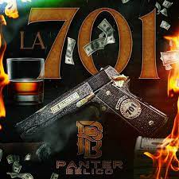

La 701

singers:
written by: Tito Double P.
My Favorite El Panter Belico song! I love the vibe of the song.
The song is basically talking about the life and legacy of Joaquín Guzmán Loera, better known as El Chapo.
Released on July 7,2023
My favorite lyrics:
- "Alegre y enamorado"
-
This is one of my favorite lyrics because it says that he was happy y tambien enamorado even though his job wasn't easy.His life wasn't easy either.
- "Toquen corridos bonitos, de esos viejitos, como el del M Grande"
- I love corridos especially old corridos.